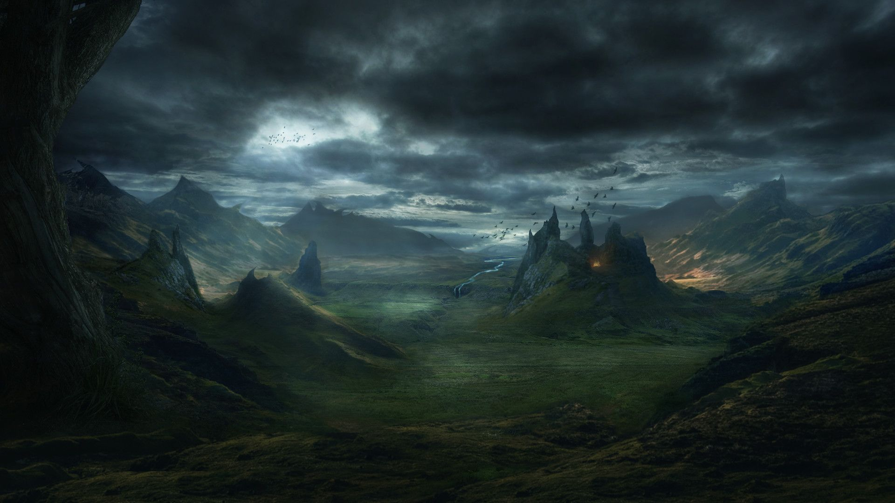

State of the World
Xandros was changed forever by the Sundering. The Sundering was the time at which Tyr smote the world, and Lathander raised his shield, protecting the world at the cost of the entire Cosmos. Shattering the boundaries and borders that lay between realms and planes, the blow resounded throughout every plane of existence. Fragments of all of these planes came into existence simultaneously upon the world of Xandros, sometimes splicing with the surrounding terrain, sometimes replacing it, sometimes merely depositing beings and moving onwards.
Gods were brought down to mortality by the rupturing, and for many years, neither the Weave nor the Wheel could function. Over time, certain Gods have returned to the stars to begin putting things in their rightful places, but when only one realm exists, how can they find a place for such things. Nevertheless, in the world of Xandros, as nature always does, an uneasy peace and balance has been found upon the earth. Cities have risen out of the last Bastions of hope for civilization. Some of these are home to a strong group or two that rose from the ashes and underdark, or arrived with another plane of existence, others have been built from the ground by hardy survivors wielding powerful magics.
These cities are a testament to the power of civilization, but they cannot tame the Wilderness in between. The Wilderness is best avoided completely, and many folk have managed to do this, travelling between cities only by Airships that stay well away from the dangers of the lands. Others make their living by risking these lands, whether it's the merchants who travel to the scavenger towns dotted around the Wilderness, or the Treasure Rats who bring riches back from untamed lands, the Wilderness is an excellent source of income and resources for many.
